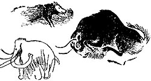

Az ősember egyszerű eszközöket használt a mindennapi életben. A kutatók sok maradványt találtak, például egy fosszilis csontvázat.

Az ősemberek vadásztak és gyűjtögettek. Barlangokban vagy egyszerű kunyhókban éltek.